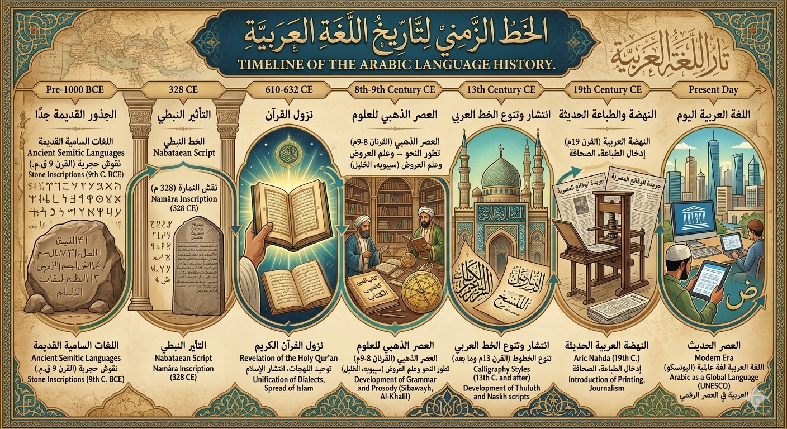
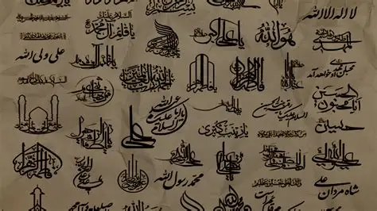

تاريخ اللغة العربية
اللغة العربية تمتد جذورها إلى آلاف السنين، فهي إحدى أقدم اللغات السامية وأكثرها تأثيرًا في التاريخ، وقد مرت بمراحل مهمة من النقوش القديمة إلى أن أصبحت لغة القرآن الكريم ثم لغة العلم والفكر في العصور الإسلامية.
نشأة اللغة العربية
الأصل السامي: العربية تنتمي إلى اللغات السامية التي تشمل العبرية والآرامية والسريانية، ويُعتقد أنها تفرعت عن السامية الوسطى منذ الألفية الأولى قبل الميلاد.
النقوش القديمة: أقدم الشواهد المكتوبة للعربية الشمالية ظهرت في النقوش النبطية والصفائية والحِسمائية في شمال الجزيرة العربية وجنوب الشام خلال القرون الأخيرة قبل الميلاد .
العصر الجاهلي
الشعر الجاهلي: كان وسيلة التعبير الأبرز، وحُفظت المعلقات التي عُلقت على الكعبة بماء الذهب، مما يعكس مكانة اللغة في المجتمع العربي قبل الإسلام.
اللهجات: تعددت اللهجات، لكن لهجة قريش كانت الأبرز، وهي التي أصبحت أساس العربية الفصحى لاحقًا .
مع الإسلام والقرآن الكريم
القرآن الكريم: نزوله في القرن السابع الميلادي جعل العربية لغة الدين والهوية، وأكسبها قدسية وانتشارًا واسعًا.
التدوين: في عهد الخليفة عثمان بن عفان جُمعت المصاحف، وأصبحت العربية لغة موحدة للمسلمين .
العصر العباسي والأندلس
العصر العباسي: تحولت العربية إلى لغة العلم والفلسفة، حيث تُرجمت إليها مؤلفات اليونان والفرس والهند، وازدهرت علوم النحو والصرف والبلاغة.
الأندلس: امتزجت العربية بالثقافة الأوروبية وأسهمت في النهضة الفكرية التي ألهمت أوروبا لاحقًا.
العربية المعاصرة
عدد المتحدثين: اليوم يتحدث بالعربية أكثر من 550 مليون إنسان، منهم نحو 300 مليون كلغة أم و250 مليون كلغة ثانية، مما يجعلها في المرتبة الرابعة عالميًا بعد الصينية والإنجليزية والإسبانية .
مكانتها العالمية: هي لغة رسمية في أكثر من 20 دولة، ولغة دين لأكثر من ملياري مسلم، مما يمنحها قدرة على الصمود والانتشار رغم التحديات. .

علوم اللغة العربية
اللغة العربية ليست مجرد وسيلة للتواصل، بل هي منظومة علمية متكاملة نشأت عبر القرون لتضبط جمالها ودقتها. وقد أسهم العلماء في تأسيس علوم متعددة تهدف إلى حفظ اللغة وصونها من اللحن والاضطراب، ومن أبرز هذه العلوم:
علم النحو
علم يدرس قواعد تركيب الجملة العربية، ويحدد مواقع الكلمات وعلاقاتها لضمان وضوح المعنى وصحة الإعراب.
أبرز العلماء:
أبو الأسود الدؤلي: أول من وضع اللبنات الأولى للنحو لحماية القرآن من اللحن.
سيبويه: صاحب كتاب الكتاب الذي يُعد المرجع الأهم في النحو.
ابن مالك: مؤلف ألفية ابن مالك التي أصبحت أساسًا لتدريس النحو.
ابن هشام الأنصاري: صاحب كتاب مغني اللبيب الذي جمع فيه دقائق النحو .
.
علم الصرف
يهتم ببنية الكلمة وتحولاتها، مثل الاشتقاق وتصريف الأفعال، دون النظر إلى موقعها في الجملة.
أبرز العلماء:
أبو عثمان المازني: واضع علم الصرف ومؤسس قواعده.
معاذ بن مسلم الهراء: من أوائل من أسهموا في تطوير الصيغ الصرفية.
ابن جني: صاحب كتاب الخصائص الذي تناول فيه قضايا الصرف والنحو معًا .
علم البلاغة
علم يبحث في جماليات الأسلوب وقوة التأثير، ويشمل علوم البيان والبديع والمعاني
أبرز العلماء:
عبد القاهر الجرجاني: مؤلف دلائل الإعجاز وأسرار البلاغة، وضع أسس نظرية النظم.
السكاكي: صاحب كتاب مفتاح العلوم الذي جمع فيه قواعد البلاغة.
القزويني: مؤلف الإيضاح في علوم البلاغة، الذي أصبح مرجعًا للدارسين.
فن الخط العربي
الخط العربي ليس مجرد وسيلة للكتابة، بل هو فن بصري راقٍ يجمع بين الجمال والروحانية. منذ القرون الأولى للإسلام، ارتبط الخط العربي بالقرآن الكريم، فصار وسيلة لتزيين المصاحف والمساجد والقصور، وأصبح أحد أبرز الفنون الإسلامية التي تعكس الهوية الحضارية للأمة.
نشأة الخط العربي
تطور من الخط النبطي والصفائي في شمال الجزيرة العربية.
مع انتشار الإسلام، أصبح الخط الكوفي هو الخط الرسمي في كتابة المصاحف والنقوش.
أنواع الخطوط العربية
الخط الكوفي: أقدم الخطوط، يتميز بالزوايا الحادة والصلابة، استخدم في كتابة المصاحف الأولى.
خط النسخ: وضعه ابن مقلة، ويُعد الأكثر شيوعًا اليوم لسهولة قراءته.
خط الثلث: خط فني بديع، يُستخدم في الزخارف والكتابات الجدارية.
الخط الديواني: خط أنيق نشأ في البلاط العثماني، يتميز بالانحناءات والمرونة.
خط الرقعة: خط عملي سريع، شاع استخدامه في الكتابة اليومية.
أبرز الخطاطين عبر التاريخ
ابن مقلة (ت 328هـ): واضع قواعد الخط العربي وأول من وضع نسب الحروف.
ابن البواب (ت 413هـ): طوّر خط النسخ وأبدع في زخرفة المصاحف.
ياقوت المستعصمي (ت 698هـ): من أعظم خطاطي العصر العباسي، أتقن الثلث والنسخ.
مصطفى راقم (ت 1826م): خطاط عثماني بارع، جدد قواعد خط الثلث والديواني.
مكانة الخط العربي اليوم
لا يزال الخط العربي حاضرًا بقوة في الفنون المعاصرة، حيث يُستخدم في التصميمات الحديثة والشعارات واللوحات الفنية، ويُدرّس في مدارس ومعاهد متخصصة للحفاظ على هذا التراث العريق.

انتشار اللغة العربية في العالم
انتشار اللغة العربية في العالم
اللغة العربية ليست مجرد لغة قومية، بل هي لغة عالمية ذات حضور واسع في التاريخ والحاضر. فقد ارتبط انتشارها بالدين والثقافة والتجارة، مما جعلها إحدى أكثر اللغات تأثيرًا في الحضارة الإنسانية.
انتشارها مع الإسلام
مع نزول القرآن الكريم، أصبحت العربية لغة الدين والعبادة لأكثر من ملياري مسلم حول العالم.
توسعت رقعة انتشارها مع الفتوحات الإسلامية في آسيا وإفريقيا وأوروبا، فأصبحت لغة العلم والإدارة في مناطق واسعة.
العربية كلغة علم وحضارة
في العصر العباسي والأندلسي، كانت العربية لغة الفلسفة والطب والفلك والرياضيات، حيث تُرجمت إليها مؤلفات اليونان والفرس والهند.
أصبحت العربية جسرًا لنقل المعرفة إلى أوروبا، وأسهمت في النهضة الأوروبية عبر الترجمات اللاتينية.
مكانتها اليوم
يتحدث بالعربية أكثر من 550 مليون إنسان، منهم نحو 300 مليون كلغة أم، و250 مليون كلغة ثانية.
هي لغة رسمية في أكثر من 20 دولة، ولغة عمل في منظمات دولية مثل الأمم المتحدة.
تنتشر العربية في قارات متعددة: آسيا، إفريقيا، وأوروبا، وتُدرّس في جامعات عالمية كإحدى أهم اللغات الحية.
العربية والهوية الثقافية
لا تزال العربية رمزًا للهوية والانتماء، فهي لغة الأدب والشعر والدين.
كما أنها لغة مشتركة تربط شعوبًا مختلفة بثقافة واحدة، وتُعد من أهم أدوات التواصل الحضاري بين الشرق والغرب.